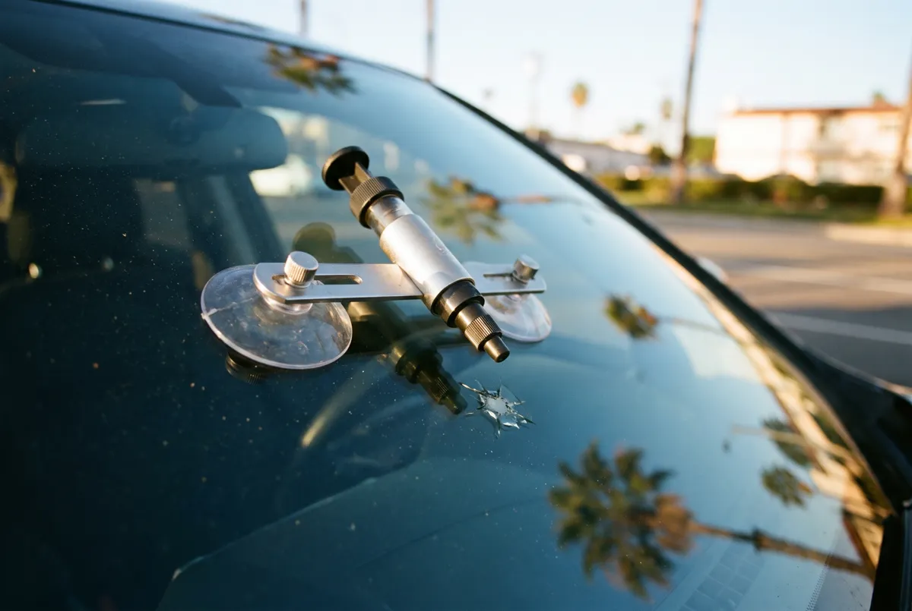

Windshield chip repair in Garden Grove stops a fresh rock chip before it turns into a crack. Garden Grove Auto Glass Repair fills the chip with clear resin in about 30 minutes at your home or office, and you keep your original windshield and its factory seal.

First the chip gets cleaned and any moisture inside is dried out, which matters on a damp marine-layer morning. A bridge tool is mounted over the damage with suction cups. It pulls the air out of the break, then pushes clear resin in under pressure. A UV lamp cures the resin hard, and the surface is scraped and polished flat. On a hot day the technician works in shade so the resin does not cure before it fills the break. Most chips end up much harder to see, and they stop spreading.
Round and star-shaped chips under a quarter are the best candidates.
A single crack under about six inches can often still be filled.
Filling it before the hot months keeps heat and cold air from running it.
A clean repair helps avoid a charge for damaged glass at turn-in.
Stones from trucks on the 22, the 405 and the 5 are the usual cause.
Repairs leave a faint mark, so they work best away from the driver’s eye line.
A chip is a break in the outer layer of glass, and every change in temperature stresses its edges. A cool, foggy morning, a hot parking lot at noon and the air conditioning on the drive home can all happen in one Garden Grove day in September. Dust and moisture settle in the chip, and potholes and slammed doors add shocks. People ask, “Can it wait a few months?” Sometimes. Through a late-summer heat wave, usually not.
The cost of windshield chip repair in Garden Grove depends on how many chips there are and how big they are. One small chip is the quickest job, while several chips or a short crack take more time and resin. Many insurers waive the deductible for chip repair under comprehensive coverage, because a repair costs them far less than a new windshield. Call for a free quote and we will help you check. Paying for a whole new windshield because a chip sat too long is frustrating, and it happens every summer.
| Chip repair | New windshield | |
|---|---|---|
| Damage size | Chips under a quarter, cracks under about 6 inches | Larger chips, long cracks or many breaks |
| Factory seal | Stays untouched | Replaced with a new urethane bond |
| Time | About 30 minutes | About an hour, plus cure time |
| Calibration | Not needed | Often needed on newer vehicles |
If the damage is too big to fill, windshield replacement in Garden Grove is the safer fix. You can also see all auto glass services in Garden Grove.
Most chip repairs take about 30 minutes on site, and you can drive right away. The resin is cured with UV light, so there is no waiting for it to dry.
Usually it gets much harder to see, but a faint mark often stays. The main goal is to stop the chip from spreading and give the glass back its strength.
Clear tape over the chip keeps dust and moisture out until the repair. On hot days, park in the shade if you can and ease into the air conditioning so the chip does not run.
Yes, but not in direct sun on hot glass. The technician works in shade or uses a cover so the resin flows into the break before it cures.
Call for a free windshield chip repair quote in Garden Grove. Most repairs take about 30 minutes.
Call (714) 200-1764 Now